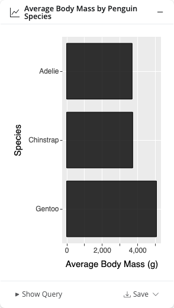
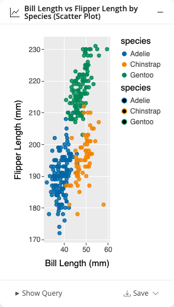
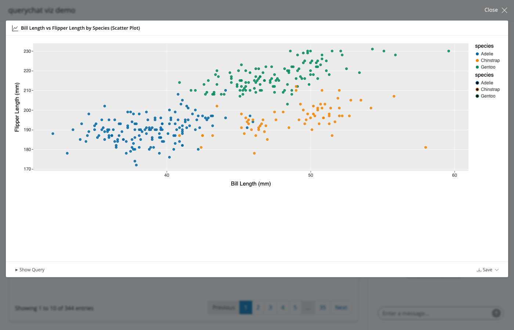
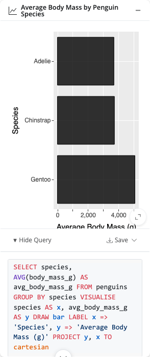

querychat can create charts inline in the chat. When you ask a question that benefits from a visualization, the LLM writes a query using ggsql — a SQL-like visualization grammar — and renders an interactive chart directly in the conversation.
Getting started
Visualization requires two steps:
-
Install the ggsql package:
install.packages("ggsql") -
Include
"visualize"in thetoolsparameter:
Ask something like “Show me body mass by species as a bar chart” and querychat will generate and display the chart inline:

Choosing tools
The tools parameter controls which capabilities the LLM
has access to. By default, only "query" and
"update" are enabled — visualization must be opted into
explicitly.
To enable only query and visualization (no dashboard filtering):
See Tools for a full reference on available tools and what each one does.
Custom apps
The example below shows a custom Shiny app with visualization enabled.
library(shiny)
library(bslib)
library(querychat)
library(palmerpenguins)
qc <- QueryChat$new(
penguins,
tools = c("update", "query", "visualize"),
data_description = paste(
"The Palmer Penguins dataset contains measurements of bill",
"dimensions, flipper length, body mass, sex, and species",
"(Adelie, Chinstrap, and Gentoo) collected from three islands in",
"the Palmer Archipelago, Antarctica."
)
)
ui <- page_sidebar(
title = "querychat viz demo",
sidebar = qc$sidebar(width = 400),
card(
full_screen = TRUE,
card_header("Data"),
DT::DTOutput("dt")
)
)
server <- function(input, output, session) {
qc_vals <- qc$server()
output$dt <- DT::renderDT(qc_vals$df(), fillContainer = TRUE)
}
shinyApp(ui, server)What you can ask for
querychat can generate a wide range of chart types. Some example prompts:
- “Show me a bar chart of body mass by species”
- “Scatter plot of bill length vs flipper length, colored by species”
- “Line chart of average body mass over time”
- “Histogram of bill depths”
- “Facet flipper length by island and species”
The LLM chooses an appropriate chart type based on your question, but you can always be specific. If you ask for a bar chart, you’ll get a bar chart.

If you don’t like the chart, ask the LLM to adjust it — for example, “make the dots bigger” or “use a log scale on the y-axis”.
Chart controls
Each chart has controls in its footer:
Fullscreen — Click the expand icon to view the chart in fullscreen mode.

Save — Download the chart as a PNG or SVG file.
Show Query — Expand the footer to see the ggsql query used to generate the chart.

How it works
- The LLM generates a ggsql query — a SQL-like grammar that describes both data transformation and visual encoding in a single statement.
- The SQL is executed — querychat runs the data portion of the query against your data source locally.
- The VISUALISE clause is rendered — the result is passed to a ggsql reader, which produces an interactive chart.
- The chart appears inline — the chart is rendered in the conversation as an interactive widget.
Note that visualization queries are independent of any active
dashboard filter set by the update tool. They always run
against the full dataset.
Learn more about the ggsql grammar at ggsql.org.
See also
- Tools — Understand what querychat can do under the hood
- Provide context — Help the LLM understand your data better